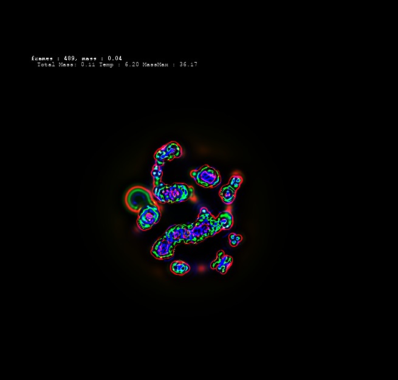

Sample Text: Diffusion Lenia.
Paper Repository: GitHub
Preprint: PreprintName
Sample ref:
Sample footnote

Sample cross-reference to figure ()
A discussion of the results, their significance and meaning.
Conclusion to wrap up the paper summarising what was done and how the results are significant